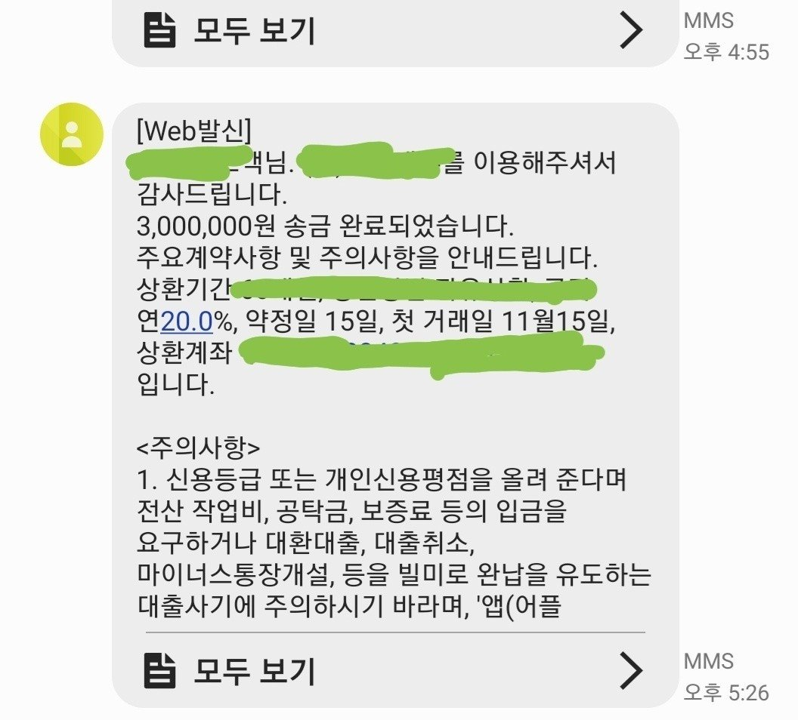
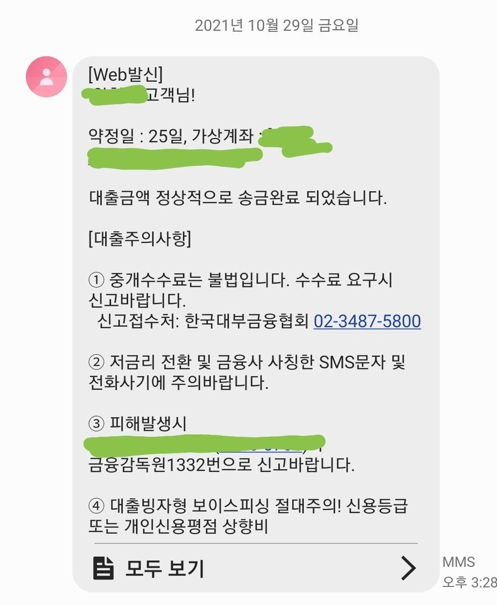

[개인회생자대출] 개인회생자 사업자 대출, 김한수 상담사님 정말 정말 감사드립니다!
개인회생기간 만기 1회차 앞두고 대출이 필요하여
검색을 통해 뱅크앤론을 찾게 되었습니다.
카톡채널을 통해 상담문의를 남겼더니 정말 빠르고 친절하게 답변을 주시더라구요
검색하면서 여러업체를 둘러보고 꼼꼼히 비교해보았는데
카페후기나 시스템, 상담사님들의 친절함이나 대출성공률들을 서치해보니
뱅크앤론이 가장 신뢰가 가서 여기서 진행하고 싶었습니다.
상담문의후 제게 연락을 주신 분은 김한수 상담사님이셨는데
너무 친절하시고 일처리도 깔끔하고 빠르게 진행해주셨고
제가 잘 몰라서 궁금해하는 점을 물어보면 안심시켜주시고 잘 설명해주셔서
진행이 매끄러웠습니다.
대출진행시 대부분은 급한상황에서 불안한 마음을 안고 상담사님과 연락을 하게 되는데
이때 친절하게 받아주시고 신뢰도 있는 분을 만나야
내 상황을 편하게 오픈하고 빠른 대출진행이 되는 것 같습니다.
그런의미에서 김한수 상담사님은 너무나도 능숙하고 빠른 진행으로
정말 순식간에 제가 원한 금액을 승인받아주셨고, 추가금액도 진행해주셔서 여유로운 자금확보가 가능했습니다.
특히 첫 대출승인때는 제 생각보다 스피디하게 진행되어 접수부터 입금까지 놀랄정도로 빨랐습니다.
사업자이며
대출신청당시 미납 2회차, 만기 1회차 남겨둔 상황, 매월 변제금액은 약 55만원 정도
사업기간은 2015년 하반기부터 지금까지.
기대출은 회생채권에 포함하지 않은 대부 300만원 원금이 남아있던 상태.
회생중 대출을 알아보고 심사하거나 한적은 전혀 없음 (회생대출은 처음이었던 상황)
첫 심사에 1000만원이 바로 승인났고
두번째 업체에서 300만원 승인났습니다.
김한수 상담사님께서 추가로 더 받을 수 있게 도와주신다고하여
이번주에 다시 이야기를 나눌 예정입니다!
김한수 상담사님 정말 감사합니다.
급한 상황에서 친절한 상담은 저에게 희망과 같았어요~
이번주에 또 연락드리겠습니다 :)

